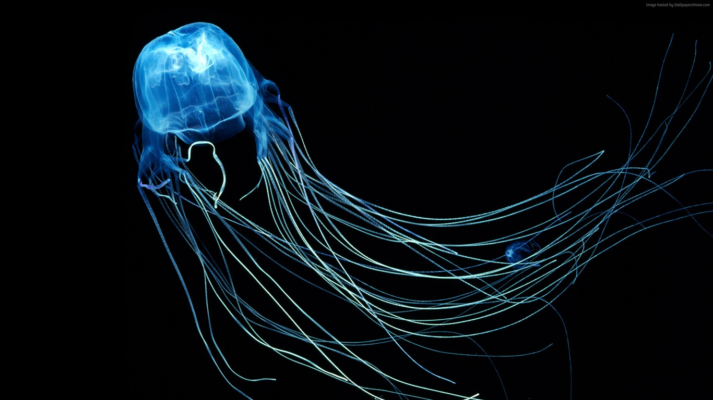
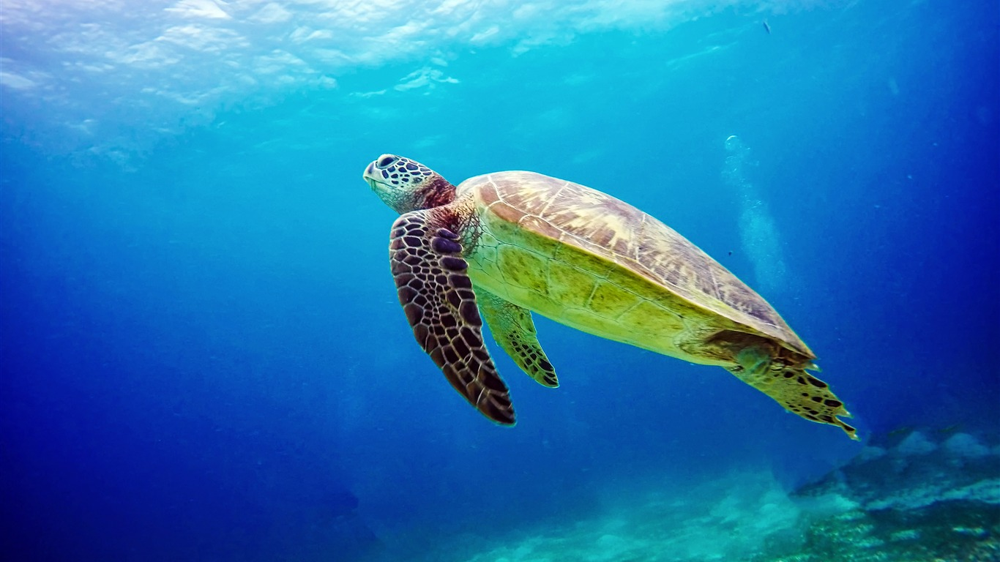
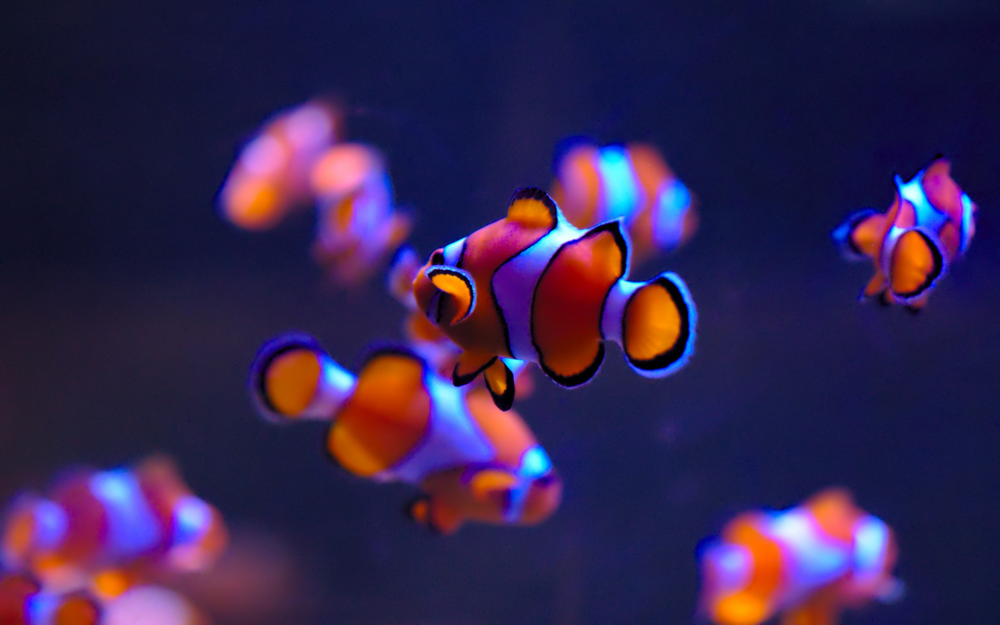

Biologia marinha é a especialidade biológica que se encarrega de
entender os organismos que vivem em ecossistemas de água salgada e
as relações dos mesmos com o ambiente.
🐋 🐟 🐠 🐡
Seres Marinhos
Alguns dos seres marinhos mais conhecidos são:
cavalos marinhos, baleias, esponjas, estrelas
do mar, medusas, tubarões, além dos seres uni-
celulares, como protozoários e algumas algas.
Importância
Todos os seres do mar têm sua própria importância,
mas juntos eles formam as cadeias e teias alimenta-
res dos ecossistemas, além disso, alguns também cola-
boram com a limpeza das impurezas naturais do mar.
Problemas
O problema que sempre esteve nos holofotes é a po-
luição de rios, mares e oceanos, mas a caça excessi-
va também traz sérios problemas ao meio ambiente e
ao equilíbrio natural.
A caça não é apenas a pescaria e, também, não é ape-
nas para alimentação, mas as caças aos jacarés por seu
couro, ou outros animais apenas por diversão ou como
um troféu nos diversos aquários espalhados pelo mun-
do, que, o que muitos não sabem, é que podem trazer
uma série de problemas a certas espécies, se comprados
do tamanho errado.
Possíveis soluções
Se o governo fosse mais rígido quanto a suas normas de
preservação natural, e se as pessoas fossem educadas desde
cedo, para que se tornem adultos responsáveis e possam
ensinar seus descendentes, o mundo, como um todo, seria
preservado e as gerações futuras seriam muito mais gratas.
🐋
Galeria
  